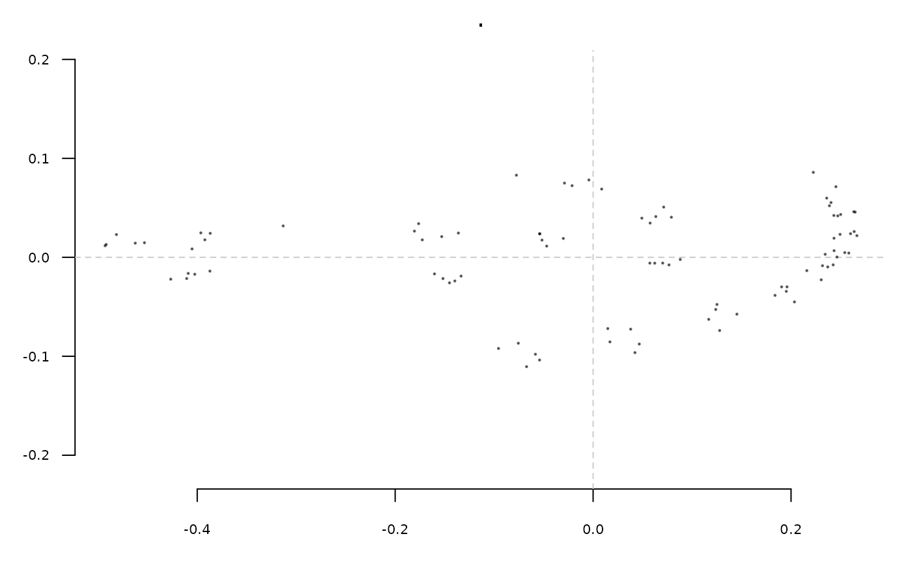
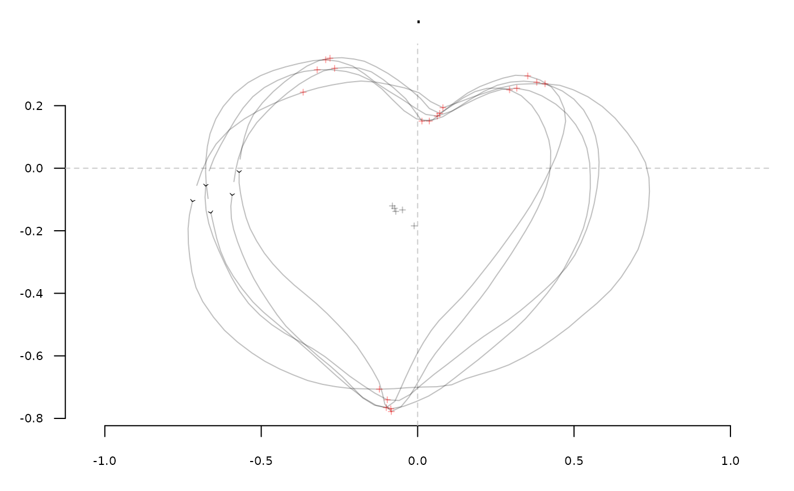

Full Generalized Procrustes alignment between shapes
Source:R/core-ldk-procrustes.R
fgProcrustes.RdDirectly borrowed from Claude (2008), called there the fgpa2 function.
Value
a list with components:
rotatedarray of superimposed configurationsiterationnumbernumber of iterationsQconvergence criterionQifull list of QQddifference between successive Qinterproc.distminimal sum of squared norms of pairwise differences between all shapes in the superimposed samplemshapemean shape configurationcent.sizevector of centroid sizes.
Details
If performed on an Out or an Opn object, will try to use the $ldk slot,
if landmarks have been previousy defined, then (with a message) on the $coo slot,
but in that case, all shapes must have the same number of coordinates (coo_sample may help).
Note
Slightly less optimized than procGPA in the shapes package (~20% on my machine).
Will be optimized when performance will be the last thing to improve!
Silent message and progress bars (if any) with options("verbose"=FALSE).
See also
Other procrustes functions:
fProcrustes(),
fgsProcrustes(),
pProcrustes()
Examples
# on Ldk
w <- wings %>% slice(1:5) # for the sake of speed
stack(w)
fgProcrustes(w, tol=0.1) %>% stack()
#> iteration: 1 gain: 77.967
#> iteration: 2 gain: 0.00039082

# on Out
h <- hearts %>% slice(1:5) # for the sake of speed
stack(h)
fgProcrustes(h) %>% stack()
#> iteration: 1 gain: 8.1326
#> iteration: 2 gain: 0.00031224
#> iteration: 3 gain: 4.8293e-05
#> iteration: 4 gain: 1.0158e-06
#> iteration: 5 gain: 4.1771e-05
#> iteration: 6 gain: 7.9575e-06
#> iteration: 7 gain: 9.2944e-06
#> iteration: 8 gain: 3.1971e-07
#> iteration: 9 gain: 5.6429e-06
#> iteration: 10 gain: 3.6475e-06
#> iteration: 11 gain: 1.0455e-06
#> iteration: 12 gain: 4.6442e-08
#> iteration: 13 gain: 3.9276e-07
#> iteration: 14 gain: 5.6006e-07
#> iteration: 15 gain: 3.5497e-07
#> iteration: 16 gain: 2.2619e-08
#> iteration: 17 gain: 1.6228e-07
#> iteration: 18 gain: 1.662e-07
#> iteration: 19 gain: 8.6435e-08
#> iteration: 20 gain: 6.7107e-09
#> iteration: 21 gain: 3.6428e-08
#> iteration: 22 gain: 4.0699e-08
#> iteration: 23 gain: 2.2641e-08
#> iteration: 24 gain: 2.0915e-09
#> iteration: 25 gain: 9.3406e-09
#> iteration: 26 gain: 1.0441e-08
#> iteration: 27 gain: 5.8207e-09
#> iteration: 28 gain: 6.1735e-10
#> iteration: 29 gain: 2.312e-09
#> iteration: 30 gain: 2.6457e-09
#> iteration: 31 gain: 1.502e-09
#> iteration: 32 gain: 1.793e-10
#> iteration: 33 gain: 5.7701e-10
#> iteration: 34 gain: 6.7226e-10
#> iteration: 35 gain: 3.8692e-10
#> iteration: 36 gain: 5.1135e-11
